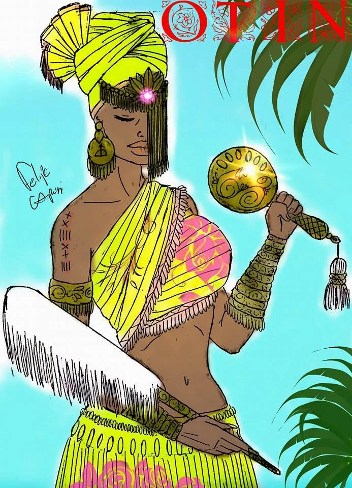

Outros Deuses
Oxumarê
O Orixá Oxumaré (também conhecido como Oxumarê) representa a cobra arco-íris, que traz as características do animal como a mobilidade, agilidade e destreza. Ele mora no céu e viaja através do arco-íris para a Terra. Além disso, ele representa a fortuna, abundância, prosperidade e riqueza que são realizações importantes para o seu povo.
Oxumaré representa a junção entre o masculino e o feminino, união que possibilidade a existência da vida, a água e a terra, a mortalidade e a imortalidade e tudo o que é duplo, ambíguo e opostos que se complementam. Ele é uma grande cobra que envolve a Terra com a sua cauda e assegura a integração do planeta e a renovação do universo regendo as transformações.
Iewá
Conhecida por sua aparência exótica, Ewá é também símbolo da beleza e sensualidade, mas nunca se entregou a nenhum homem, se conservando casta e se tornando protetora de tudo que é virgem e puro, desde o ser humano até mesmo as florestas e rios.
Não confunda pureza com ingenuidade, pois essa Orixá é muito astuta e esperta, por isso não queira nunca despertar a sua ira. Às vezes é confundida com Oxumaré, assim ela costuma ser cultuada juntamente com seu irmão e os dois são responsáveis pela energia do arco-íris. Ela também possui a serpente como seu símbolo, só que em tamanho menor que a de Oxumaré.
Imagina aquela alegria que invade de repente, aquela vontade de fazer o que nos faz bem enfim, uma vontade de viver intensamente. Esse é o Orixá Ibeji, gêmeos que carregam a felicidade em seus corações e veem a vida com os olhos de criança. Os gêmeos são protetores das crianças e simbolizam o nascimento e a vida. O Ibeji Orixá é a sobrevivência da continuidade. Na África os filhos são fonte de grande alegria, pois eles são a garantia de que a sua história e de sua descendência perdurará.
Logunedé
Logunedé, Orixá masculino, da pesca e da caça, considerado um dos mais belos e não poderia ser por menos, ele é filho de Oxóssi e Oxum. Ele herdou o jeito meigo e a graça de Oxum e a felicidade e o espírito caçador de Oxóssi, portanto Logun edé apresenta em suas características expressões femininas e masculinas, o que o faz aparecer em algumas representações da Umbanda e Candomblé como uma figura jovem.
Ele divide sua vida em dois períodos no ano, durante 6 meses ele acompanha o seu pai nas matas, o que o garantiu grande habilidade com a caça, sendo muito ágil e carregando também o axé da prosperidade, nos outros 6 meses ele convive com sua mãe nos rios, onde desenvolveu técnicas de grande pescador e absorveu as características belas e delicadas de Oxum.
Oba
Obá, a Orixá guerreira e de grande força, é a rainha do Rio Níger (o principal rio da África Ocidental e o terceiro mais longo de toda África). Está sempre com espada e escudo na mão, pronta para lutar pelo o que acredita e defende. As mulheres que buscam por força e proteção podem recorrer a essa Orixá, pois ela é a mãe que entende as dores do coração.
Filha de Iemanjá e Oxalá, a Orixá Obá é senhora das águas doces revoltas, procura sempre pelo equilíbrio e é defensora da justiça. Sempre que encontrar quebras fortes de água doce, pororocas e quedas d’água, saiba que ali se encontra ela. Obá anda ao lado de Nanã, por isso também tem controle sobre o barro e as enchentes. Por possuir grande força física, ela representa o poder feminino da luta, também é atribuído a ela o poder de transformar os alimentos crus em cozidos.
Obaluaiê

O Orixá mais temido dentre todos, conhecido como Omolu, Omulu, Obaluaê, Obaluaiê, entre outros nomes. Ele é o responsável pela terra, pelo fogo e pela morte, por causa do seu poder, é tão temido pelos humanos.
Tanto no Candomblé quanto o Obaluaiê na Umbanda é sinônimo de temor, pois ninguém esconde nada deste Orixá, ele é capaz de enxergar qualquer detalhe da vida de uma pessoa, é também o responsável pela morte já que rege a terra e é dela que tudo nasce e tem seu fim. Mas, por outro lado Omolu é o protetor dos doentes pobres, pois ele conhece o sofrimento de carregar uma enfermidade e não quer que ninguém passe por essa dor, assim ele está associado também a cura.
Odudua

Odudua é o orixá que criou a Terra. Além da criação deste mundo, também se atribui a Odudua o primeiro governo na Terra. Ele é o primeiro soberano (obá). Seu nome significa "Senhor do castelo".
Odudua é uma das divindades primordiais iorubás. Ela representa a divinização da terra e é considerada, ao lado de Obatalá, como a casal primordial e propulsor da criação. Cada um foi incumbido de determinadas funções no papel da criação do Aiê, o universo incluindo o mundo em que vivemos.
Onilé
Onilé é um Orixá que representa a base de toda a vida, a Terra-Mãe, tanto na vida como na morte, se caracteriza por ser o princípio e representação coletiva dos elegun e Egungun. é o primeiro a receber as oferendas e a ser evocado nos ritos dos sacrifícios. Todo terreiro possui o acento de Onilé, um deles pode ser observado no centro do Barracão de (candomblé), denominado como o fundamento da casa ou simplesmente Axé da casa, onde todos sabiamente reverenciam este local. Também chamado pelo “Povo de santo” de Oluaye, Aiyê, Ilê e Sakpatá.
Okê
OKE é um orixá onde começa a firmeza de nossa consagração religiosa, por isso, precisamente ele é representando por um pedaço de rocha ou montanha, por ser considerado o mais forte e firme através dos ODUN (anos) e, por isso é que adoramos e rogamos a este orixá por nossa estadia e firmeza nessa Terra.
Orunmilá
Orunmilá ou Orunlá, é um dos Orixás fun-fun, ou seja, esteve presente na criação da terra e da humanidade. Tanto na Umbanda quanto no Candomblé, é ele o redentor do poder da intuição, da vidência e da leitura dos destinos. Ele é quem guarda a sabedoria do Ifá (que é como a Bíblia para os cristãos) e por isso é representado com o seu opelê ifá.
Seu prestígio é um dos mais altos, e possui um imenso valor para todos da religião afro, este Orixá está somente abaixo de Olodumarê (o Deus supremo), onde através de seu grande senso crítico ele conserta tudo que é imperfeito, desta maneira ficou também conhecido como uma forma sincretizada do Espírito Santo.
Oraniã
Oraniã, filho de Odudua, é o orixá das profundezas da Terra, também chamado de Senhor da Terra Firme. Aquele cuja a fama era a maiorem toda a nação iorubá. Tornou-se famoso como caçador desde a juventude e, em seguida, pelas grandes, numerosas e proveitosas conquistas que realizou.
Otim
É a orixá do rio Otin, que passa pelo estado de Osun, na Nigéria. É mais um caso de um espírito da natureza, ligado a um determinado lugar (no caso de Otim, a um rio) que com o passar dos anos se tornou uma divindade. No Brasil, é cultuada como orixá da caça, filha de Erinlé.
Olodumarê
Olodumarê o ser superior dos iorubás, que vive num universo paralelo ao nosso, conhecido como Orun, por isso Ele é também conhecido como Àjàlórún e Olórun Senhor ou Rei do Òrún, que através dos Orixás por ele criado, resolve incumbir funções e ações e um dos Orixás, por Ele criado, Orixalá, tem a função de criar e governar o futuro Aiê: a Terra, nosso universo conhecido.
Oxaguiã
Oxaguiã, rei de Ejibô, é um deus da criação, ao lado de Odudua e Oxalá. Oxaguiã é o criador da cultura material, começando pelo pilão, instrumento importantíssimo no preparo de alimentos, como o inhame.